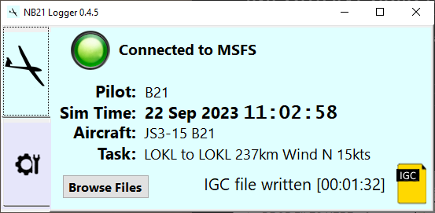
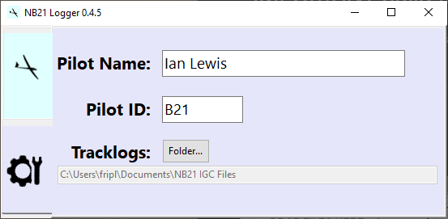
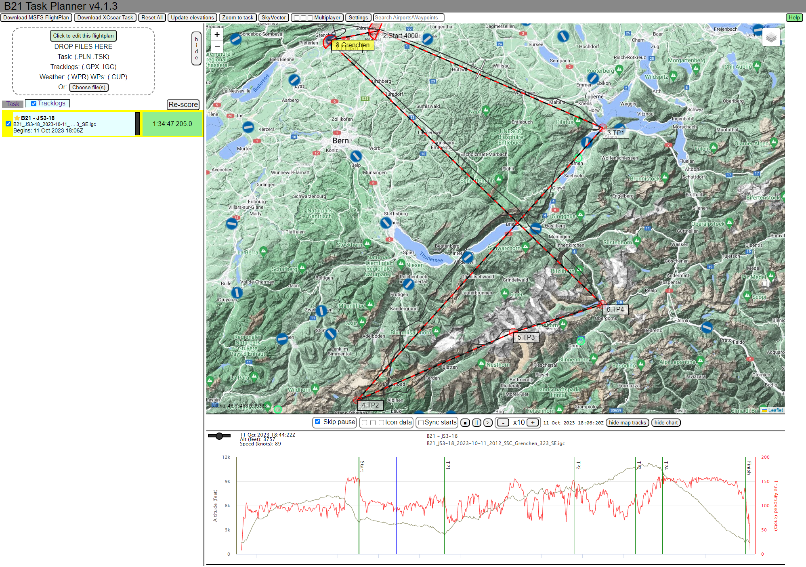
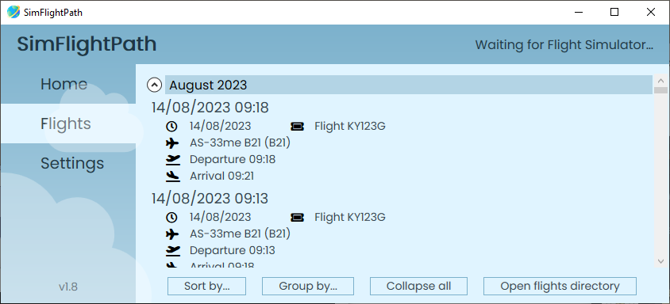

Overview
All tracklogs store rows of TIME/LAT/LONG/ALT showing where you've been in your aircraft. This data can be found reliably in IGC-format files and GPX-format
files. There are TWO major issues to consider:
- TIME. This is an issue logging flights in all simulators. Which time should the logger use? The in-sim time provided by the simulator? Or the real-world
time on the computer the pilot is using. That real-world time can be UTC or local. For sim-soaring we really need BOTH sim-date/time and real UTC time.
Sim-time can be really quirky, not necessarily running at the same
rate as the real world, may contain pauses, and surprisingly often goes backwards which befuddles any general-purpose tracklog analysis software.
Real-world time reassuringly progresses forwards at a constant rate but it contains no information about the in-sim time of day the pilot was flying in
the simulator. Note that the format ALL log file formats use is TIME/LAT/LONG/ALT, i.e. there is only one place for the time to be written, so you have to
choose. Some loggers choose in-sim time. Other loggers choose real-world time.
- ANY DATA OTHER THAN TIME/LAT/LONG/ALT. There are lots of things you might want to store in the tracklog. This rather crucially includes who was flying the
plane and what plane were they flying. Tragically with GPX tracklogs there's no common format for anything other than TIME/LAT/LONG/ALT. Of course you could
could invent a format, that's the issue, no-one is using anyone elses format. The IGC format does much better than this, with a bunch of
soaring-related data fields inside the file. In fact for sim-soaring the IGC format is pretty much great except it only contains the simple concept of time
i.e. time is some absolute truth, the same for everyone, and always marches forwards at a predictatable rate. This makes sense as a RL logger will use GPS time
which is truly guaranteed to be the same for everyone, but within a sim you cannot rely on this at all.
For sim-soaring, the most popular software to view these glider tracklogs is the online B21 Task Planner,
however the IGC format produced is compatible with other IGC file viewers
NB21 Logger for MSFS



NB21 Logger is specifically designed for Microsoft Flight Simulator but uses the FAI IGC file format to store its tracklogs.
NB21 Logger 'Standard format' data
The file 'header'/'footer' data (as opposed to the repeating TIME/LAT/LONG/ALT data) contains:
- the logger type, i.e. NB21 Logger
- pilot name (from NB21 Logger settings)
- pilot competition id (also from the settings)
- DATE of flight (real-world UTC)
- plane model e.g. AS-33
- glider type e.g. 15m flapped
- Stores the loaded flight plan as the 'task' inside the IGC file
- checksums for the aircraft.cfg and flight_model.cfg files
- 'signatures' for the weather loaded
- an overall checksum for the IGC file itself
Data stored in the repeating position records (i.e. time/lat/long/alt/++)
- time: real-world UTC time from the user's PC.
- lat/long/alt: in the required IGC format, height in meters
- alt meters AGL
- True airspeed kph
- wind vertical speed m/s
- Engine on/off
- Flap position 0..N
- On ground indication 0..1
Additional NB21 Logger records embedded in the tracklog
This is done using the 'L' records designed into the IGC format allowing additional custom records that can be
ignored by software that doesn't recognise them.
- Slew detected
LNB21 <hhmmss> SLEW ON <current altitude m>
LNB21 <hhmmss> SLEW OFF <current altitude m>
- Pause detected
LNB21 <hhmmss> PAUS ON
LNB21 <hhmmss> PAUS OFF <pause duration seconds>
- Local time change detected
LNB21 <hhmmss> LTIM <previous local time> <new local time> <change seconds>
- Local date change detected
LNB21 <hhmmss> LDAT <prev date> <new date>
- SIMULATION RATE change detected
LNB21 <hhmmss> RATE <prev rate> <new rate>
- PC system time change detected
LNB21 <hhmmss> PTIM <previous UTC time>
- Engine on/off detected
LNB21 <hhmmss> ENG ON
LNB21 <hhmmss> ENG OFF
- Total weight change detected.
LNB21 <hhmmss> TOTW <weight kg>
- Load Aircraft detected
LNB21 <hhmmss> LDAC <aircraft type>
Other tracklog loggers
SimFlightPath

Advantages
- Very simple to use
- Reliable
- Uses 'real PC clock' time to store TIME/LAT/LONG/ALT records so less drama than the in-sim clock.
Disadvantages
- Just uses the PC clock time, so no info on what in-sim time the pilot is flying.
- Uses some 'local' variant of the PC clock time, so simultaneous flights from different locations will not have same time in log
- Has a 'variable rate' tracklog storage concept which can slow down to one sample per 12 seconds
- Uses the GPX format for storage, so no standardisation of anything other than time/lat/long/alt
XCSoar
Advantages
- Uses the IGC format for the data, so possibility of some enhancements
Disadvantages
- Is a real-world logger designed originally to run on a PDA receiving data from a GPS so has no idea about the simulator at all
- Requires FSUIPC to get MS Flight Simulator from 2020 to emulate a GPS from 1998
Little Navmap
Advantages
- Is a map/planner tool lots of people are using anyway, so they get a logger 'by default'
Disadvantages
- Logging is definitely not the primary function of Little Navmap, so the logger is time/lat/long/alt only.
- The time used is in-sim local clock, so it will vary greatly due to common user interaction
Tracklog storage file formats
IGC
This is the 'official' format for RL soaring competitions and badge submissions, originally designed by Ian Strachan a very long time ago. It is a compact format but
extensible, with standardised fields for much useful aviation data.
I've documented the IGC format here.
GPX
Archive
sim_logger provides this capability for FSX.